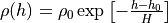
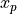

WSF_PIECEWISE_EXPONENTIAL_ATMOSPHERE¶
Script Type: WsfPiecewiseExponentialAtmosphere.
- atmosphere_model WSF_PIECEWISE_EXPONENTIAL_ATMOSPHERE¶
atmosphere_model <name> WSF_PIECEWISE_EXPONENTIAL_ATMOSPHERE ... Common Atmosphere Commands ... end_atmosphere_model
Overview¶
The WSF_PIECEWISE_EXPONENTIAL_ATMOSPHERE models the atmospheric density using a series of exponential profiles for different altitude ranges. In each range the profile takes the form:
,
where  is a scale height,
is a scale height,  is the altitude at which the
segment begins, and is the density of the model at that
altitude. The values of these constants can be found in Vallado’s
Fundamentals of Astrodynamics and Application, Fourth Edition, in Table 8-4
on page 567, and are reproduced below. The values are chosen so that the
resulting density is continuous at the segment boundaries.
is the altitude at which the
segment begins, and is the density of the model at that
altitude. The values of these constants can be found in Vallado’s
Fundamentals of Astrodynamics and Application, Fourth Edition, in Table 8-4
on page 567, and are reproduced below. The values are chosen so that the
resulting density is continuous at the segment boundaries.
|
|
[] |
|---|---|---|
0.0 |
7.294 |
1.225e0 |
25.0 |
6.349 |
3.899e-2 |
30.0 |
6.682 |
1.774e-2 |
40.0 |
7.554 |
3.972e-3 |
50.0 |
8.382 |
1.057e-3 |
60.0 |
7.714 |
3.206e-4 |
70.0 |
6.549 |
8.770e-5 |
80.0 |
5.799 |
1.905e-5 |
90.0 |
5.382 |
3.396e-6 |
100.0 |
5.877 |
5.297e-7 |
110.0 |
7.263 |
9.661e-8 |
120.0 |
9.473 |
2.438e-8 |
130.0 |
12.636 |
8.484e-9 |
140.0 |
16.149 |
3.845e-9 |
150.0 |
22.523 |
2.070e-9 |
180.0 |
29.740 |
5.464e-10 |
200.0 |
37.105 |
2.789e-10 |
250.0 |
45.546 |
7.248e-11 |
300.0 |
53.628 |
2.418e-11 |
350.0 |
53.298 |
9.518e-12 |
400.0 |
58.515 |
3.725e-12 |
450.0 |
60.828 |
1.585e-12 |
500.0 |
63.822 |
6.967e-13 |
600.0 |
71.835 |
1.454e-13 |
700.0 |
88.667 |
3.614e-14 |
800.0 |
124.64 |
1.170e-14 |
900.0 |
181.05 |
5.245e-15 |
1000.0 |
268.00 |
3.019e-15 |
Common Atmosphere Commands¶
- central_body … end_central_body¶
central_body <central-body-type> polar_offset_angles end_central_body
Specify the central body and related ellipsoid model to be used by simulation platforms. Options for <central body type> are the following:
earth_wgs72 (Earth World Geodetic System 1972): The central body ellipsoid is defined according to the WGS-72 standard.
earth_wgs84 (Earth World Geodetic System 1984): The central body ellipsoid is defined according to the WGS-84 standard.
earth_egm96 (Earth Gravity Model 1996): The central body ellipsoid is defined according to the EGM-96 standard.
moon: The central body ellipsoid is defined according to published lunar parameters.
sun: The central body ellipsoid is defined according to published solar parameters.
jupiter: The central body ellipsoid is defined according to published Jovian parameters.
Default earth_wgs84
- polar_offset_angles <angle-value> <angle-value>¶
Specify the central_body’s polar offset angles ( and
 , respectively) of the Celestial Intermediate Pole (CIP) with respect to the WCS (ITRS) coordinate system. Providing these values (of the order of tenths of arc-seconds) enables very highly accurate conversions between ECI and WCS coordinates.
, respectively) of the Celestial Intermediate Pole (CIP) with respect to the WCS (ITRS) coordinate system. Providing these values (of the order of tenths of arc-seconds) enables very highly accurate conversions between ECI and WCS coordinates.
Default 0.0 rad 0.0 rad
Note
WCS->LLA conversions are affected by central body choice, as well as sidereal motion transforms calculated in inertial (ECI) coordinate conversions.